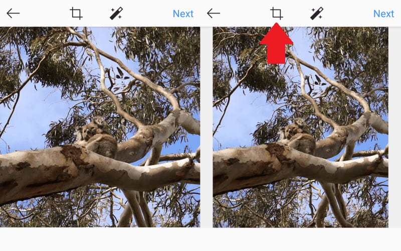
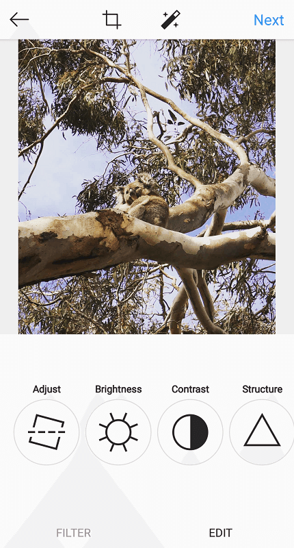
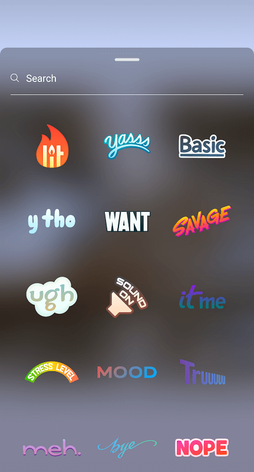
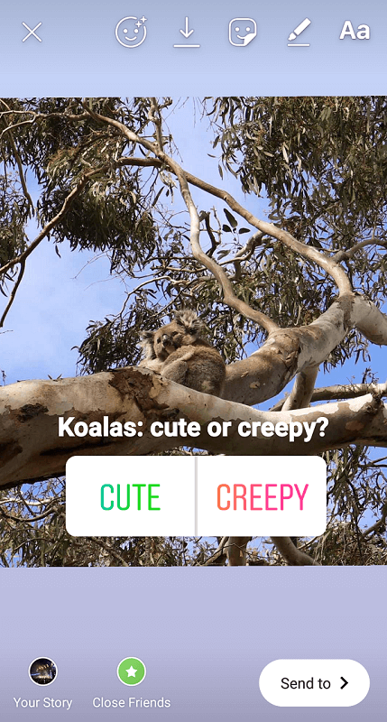
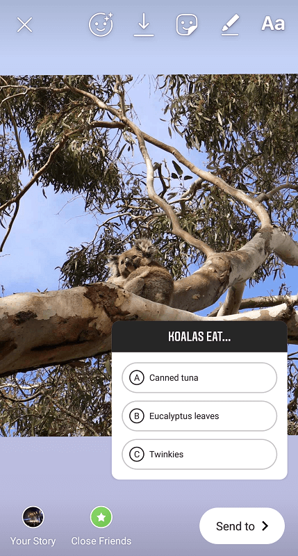
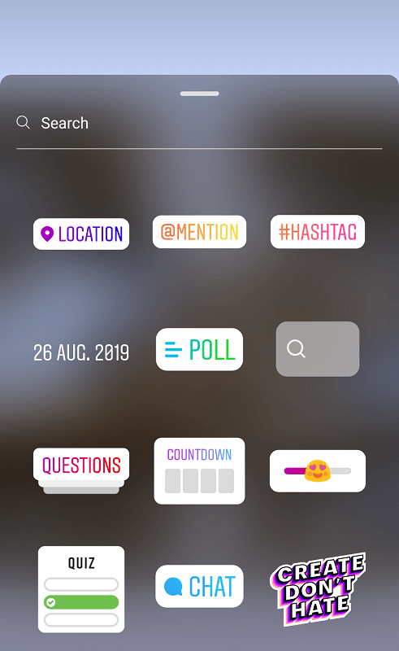
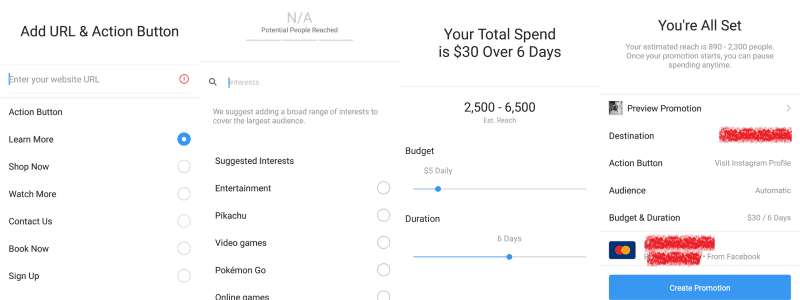
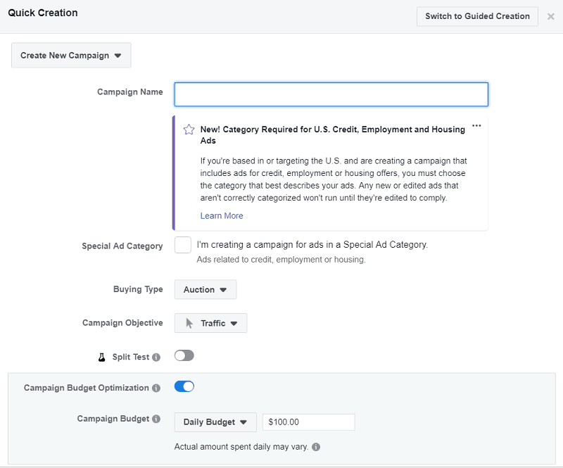

Instagram: one of the world’s leading social media platforms for businesses, influencers, and the general millennial population. With its massive reach and user base (housing 500 million active accounts), its increasing popularity is no surprise. If you’re looking to build an online brand, look no further than this app.
Here at Socialfollow, we’ve constructed an “Instagram for Dummies” to help new users settle in with all that Instagram has to offer.
Instagram for Dummies – The Algorithm
Before jumping into the fun stuff, here’s a brief rundown of how content is delivered on the Instagram platform.
The algorithm is often a subject of confusion, frustration, and controversy among businesses and casual users alike. This is system dictates how posts appear on people’s feeds, on hashtag pages, and on Instagram’s Explore page. While various changes have been made over the years, the algorithm in 2019 is influenced by three main factors: user activity, user relationships, and timeliness.
Instagram delivers specific content to your feed depending on the type of posts you normally interact with. If the system thinks you’ll like a post based on your interests, the more likely it’ll show up on your feed.
Similarly, you’re likely to see more posts from those you interact with most. These are users whose content you like and comment on on a regular basis.
Finally, the app serves up content based on how long ago ti was posted. You’re more likely to see the latest posts from other users, rather than those shared days ago.
Instagram for Dummies – Your Feed and Theme
Instagram displays user content in a grid-like format, creating an easily-navigable visual gallery. This allows users to get creative; establishing artistic themes and aesthetics that grab attention off the bat.
One of the key ingredients to an attractive Instagram theme is having a consistent one. This gives your feed a neat, cohesive aesthetic that is generally pleasing to the eye.
Creating a Quality Instagram Theme
Start out by choosing a distinct color palette that fits your brand best. Travel and lifestyle Instagrammer, Jasmine Rossol, implements plenty of brown and monochrome colours in her posts to give them an overall artsy, polaroid vibe.

Courtesy of jasminerossol (Instagram account).
If you prefer a bit of diversity, you can always change up your color theme down the line. The account @vibeofcolor, for example, creates an almost seamless, gradient transition between color palettes in their feed. For example, the top photos show off a distinctly blue colour theme…
Courtesy of vibeofcolor (Instagram account).
…and eventually transition into greens and bright yellows.
Courtesy of vibeofcolor (Instagram account).
Then, get creative with your grid display. This can be as simple as popping in a variety of different visuals – from selfies, to photographs of scenery, to simple text images with inspirational quotes.
Courtesy of elska.joyful.living (Instagram account).
Or, you can experiment with offbeat layouts. One of these is the popular “puzzle” aesthetic, in which your images appear connected to one another when viewed as a grid.
Courtesy of simplywhytedesign (Instagram account).
Others break up their content in creative ways. The user @kinha_guimaraes, for example, ensures her grid exclusively displays text images in the middle column, dividing her photographs into two separate sections.

Courtesy of kinha_guimaraes (Instagram account).
Having an attractive visual concept will not only help you stand out on the platform, but will help you lure in potential followers. This is an app that’s all about looks, after all – so let your creativity roam free!
Instagram for Dummies – Posts and Hashtags
By default, Instagram displays images in a square, 1:1 aspect ratio format. This can easily be adjusted to your liking.

Depending on your image, you can also opt for a 4:5 aspect ratio for portraits, or 1.91:1 for landscape photos.
The app also treats users to a generous selection of filters. Using the same filter for each post is a quick, easy way of maintaining a consistent look with your images.
You also have basic editing options in your toolkit, including ones that allow you to adjust the brightness, contrast, and saturation of your photo.

Prior to posting, you’ll want to write a good caption. This helps boost your engagement levels by keeping viewers on your post for a longer period of time – helping it rank higher with Instagram’s algorithm.
Courtesy of sneha_gautam (Instagram account).
Captions are the perfect opportunity for letting your brand personality shine. Add value to your post by being as clever, descriptive, or inspirational as you wish.
Finally, don’t forget your hashtags. These help your post get discovered by your target audiences, displaying them on “hashtag pages” that users search for.
Courtesy of _pointeshoeworld (Instagram account).
While Instagram offers a limit of 30 hashtags per post, studies show that posts with nine hashtags receive the most engagement. This can vary depending on the user, however, so it’s best to experiment with what works best for you.
Instagram for Dummies – Video Content
As effective as images are, you can’t neglect video content. Statistics reveal that video posts get about 38% more engagement than your standard image post, and more than double the number of comments.
Videos offer variety in your content, and offer far more flexibility than a static photograph. Though the platform has a limit of only 60 seconds per video, there are many ways to get creative with these posts, including:
Comedy Skits
As per the once-popular social media platform, Vine, plenty of Instagrammers use video for short comedic skits that offer plenty of viral potential.
Courtesy of drewisgooden (Instagram account).
Internet comedians like Drew Gooden do exactly this, creating funny bite-sized clips on Instagram to supplement his main content on YouTube. (As a side note, some YouTubers will offer sneak peeks of their content on Instagram to further market their channel).
Tutorial Videos
Tutorials are another common form of video content, offering viewers with the most value. These can be found in any niche, though are most popular among the beauty, food, and crafting communities.

Courtesy of chetrit_ (Instagram account).
Due to the short nature of Instagram videos, tutorials are often presented in a time-lapse, or through multiple jump cuts. Overlayed text is also a common feature of these videos, eliminating the need for a voiceover.
Courtesy of tasty.one (Instagram account).
Video Ads
Finally, we’ve got videos that take on the form of a traditional commercial. These are generally found on brand or company accounts, used to market a new product, service, or promotion. Such videos are often turned into actual, sponsored ads on the platform – which we’ll further discuss below.
Courtesy of oreo (Instagram account).
Video Creator Tools
With the fortunate emergence of online video creators, you needn’t be a world-class filmmaker to create a quality Instagram video. These days, plenty of users opt for tools like Shakr or Magisto to create professional-looking videos in a matter of minutes.
Courtesy of Magisto.
Such platforms may even offer libraries of stock images, clips, and music to choose from – all pre-licensed to save you the copyright hassle. Users are commonly able to select from a collection of ready-made templates, or use drag-and-drop features to easily string footage, sound, and effects together.
Courtesy of Shakr.
These services make it ever-so-easy to spice up your feed with eye-catching video content; without unnecessary hours of shooting, sourcing, and editing your material.
Instagram for Dummies – Stories
Breaking away from standard Instagram posts, Stories are another effective method of engaging your audience.
These are temporary image or video updates that don’t quite fit in with your usual feed – though are interesting enough to share with followers. They’re a channel for more day-to-day, spontaneous moments; and offer a more personal look into your brand.
Courtesy of Buffer.
Stories are therefore popular for sharing quick business announcements, “behind-the-scenes” insights, user-generated content, or simply fun and goofy moments.
The feature now garners 500 million daily active users , with 1 out of 3 of the most viewed stories coming from business accounts. To get customers rolling in, you can’t neglect this practice!
Using Story Stickers
Along with adding funky text and outbound links to your Story updates, the feature also offers a collection of unique stickers.

These can be used to simply decorate your image or video, or add a few interactive features. Such stickers include “polls”, allowing you to ask your viewer a question with two tap-able answer options.

Another one is the “Quiz” sticker, enabling users to ask simple trivia questions with multiple choice answers.

Among the more basic sticker types include “Mentions”, “Locations”, and of course, “Hashtags”. These function just as their standard post counterparts, raising your story’s visibility among its target audience.

Using Story Highlights
Though stories have a 24-hour lifespan by default, you can choose to permanently save them to your profile.
This is done by saving your story as a “highlight”, displaying it just underneath your bio. Highlights can also be saved as a group, allowing you to save related story elements under one category.
These highlight groups can be titled and given an appropriate image cover. Skincare brand, Laneige, does just this on their profile – displaying saved stories relating to press releases, events, promotions, and user-generated content in their appropriate highlight categories, as seen below.
Courtesy of laneige_us (Instagram account).
Stories can be saved as highlights while they’re live, but they’re also accessible in your archive upon expiring. From here, you can simply select the ones you’d like to display on your profile as highlights.
Instagram for Dummies – Marketing Your Profile
Once you’ve learned the ropes of quality posting, story updates, and getting around the Instagram algorithm; your next step is knowing how to promote your profile – and effectively, at that.
This can be done in a myriad of creative ways, though here are a few common strategies to get you started.
Instagram Ads
As mentioned, ads are often delivered on the platform, in the form of “sponsored posts”.
Courtesy of smiledirectclub (Instagram account).
Users can create ads out of existing posts on their profile. This is easily done by tapping the blue “Promote” button under the image or video, and following the steps provided to define your objective, target audience, and budget.

It’s recommended to promote existing posts that are already gaining high organic engagement. The more you pay, the higher your reach will be.
Instagram ads can also be created from scratch through Facebook’s Ads Manager, where users can find a wider variety of tools to customize their ads as necessary.

Engaging With Your Community
It’s one of the simpler growth strategies, but it works. By commenting, liking, and following those in your niche, you’ll be raising your brand visibility and chance of getting discovered by potential followers.
Something as simple as a comment on an influential competitor may not only gain their attention – but those of their audience, as well. Those curious will give your profile a visit, and if they like what they’ll see, you may just bump up that follower count.
Courtesy of hollydixon2 (Instagram account).
Collaborating with other users is also an effective way of tapping into new audiences. Brands do this with influencers all the time. These people often promote specific products in their content, and are then featured on the brand’s account.
The influencer gains traffic from the brand’s vast following, and vice versa. It’s a win-win for engagement, and you get to expand your professional and personal network
Instagram for Dummies – Using Trusted Marketing Services
Some of us simply do not have the time to sit and manually promote our Instagram activity. This is where growth or marketing services come in; tools to automate or manage your marketing tasks for you.
KENJI.AI – Raise Your Profile Visibility
Putting an end to negative bot stereotypes, KENJI is a auto-liking tool that helps ramp up your brand exposure – safely and efficiently.

Courtesy of Kenji.
Working well within Instagram’s guidelines, the service delivers likes to potential followers on your behalf, getting your name in their notifications. Catch enough people’s attention, and you may just see that boost in traffic and new followers.
Upleap – Have Your Very Own Marketing Manager
Like KENJI, Upleap offers a helping hand in raising your discoverability on the platform. The service pairs you up with your very own account manager, who engages with potential followers by liking their content or viewing their stories.

Courtesy of Upleap.
All you have to do is describe your profile and target audience, and your manager gets to work interacting with related accounts. Engagement only takes place among real, active users – so you can rest assured any reciprocated actions are genuine and of quality.
Socialfollow – Give Yourself a Quick Boost in Followers
Finally, we’ve got Socialfollow. For those looking to quickly bump up their follower counts – with authentic users, that is – this platform’s got your back.
Socialfollow requires no private account information or unnecessary surveys. Just sign up, define your interests, and your username will be added to a list of others in your same niche. You will then be asked to follow up to ten users from a given list. Once done, you’ll receive 50 free followers in return!

Courtesy of Socialfollow.
This process can be done once daily – leading to a potential 1500 followers a month. Best of all, the service is completely for free. The only catch is to not unfollow these daily 10 users, or your new followers will be alerted to unfollow you as a result.
Courtesy of Socialfollow.
Ready to Master the ‘Gram?
Instagram can be a bit of a wild west, with plenty of features and obscure practices to wrangle. One can be well on their way to a high follower count, however, with the proper strategies in place. Using our “Instagram for Dummies” tips, tricks, and mentioned tools, you’ll build yourself a quality profile in no time.


1 Comment